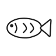
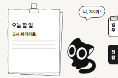

모노 스케치
귤메모 테마 · mono-sketch v1.0.0 · 흑백 손그림 다이어리 + 검은 고양이 비서
색·글꼴 토큰
강조색은 연노랑 형광펜 한 가지만 써요. 글꼴은 본문과 제목 모두 Pretendard(제목은 Bold)예요.
메모지 스킨 6종
본문 종이, 뒤에 겹친 종이, 고정 도구를 따로 분리한 SVG예요. 본문은 9-slice로 늘릴 수 있어요.
비서 캐릭터 — 까망이
프레임 크기는 192px이고 120px로 줄여서 보여 줘요. 배경은 투명하고, 프레임을 가로로 이어 붙인 시트예요.
UI 조각
업무
생활
아이디어
회의록
장보기
3시 회의 1시간 전이에요. 자료 챙겼어요?
냐옹, 오늘 일정은 두 개야.
먼저 회의자료부터 볼까?
먼저 회의자료부터 볼까?
메모를 접으면 내가 정리해 둘게!
스티커

아이콘 · 미리보기 썸네일
